GEMINI
Its name is Latin for "twins."
Gemini lights up the early evening sky from January until May
Gemini lies between Taurus and Cancer. The Geminids are a meteor shower that can be seen best on December 13–14.